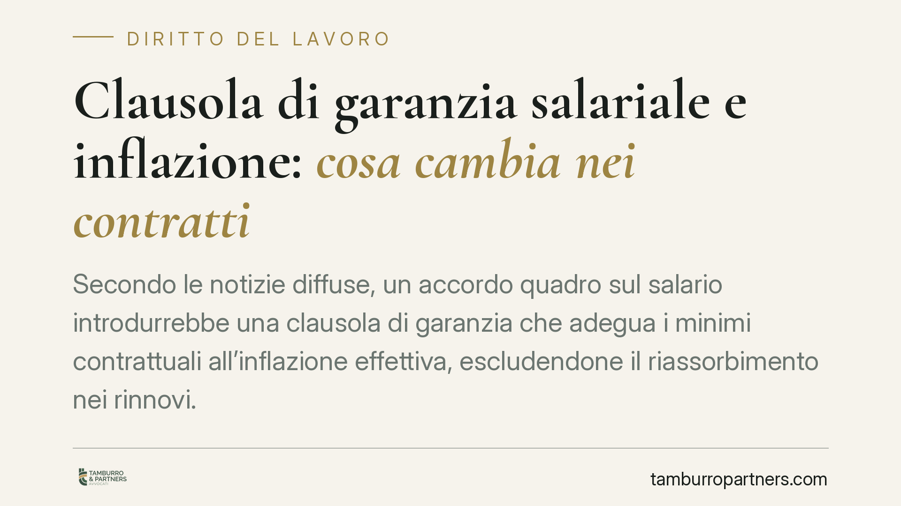

Clausola di garanzia salariale e inflazione: cosa cambia nei contratti
Secondo le notizie diffuse, un accordo quadro sul salario introdurrebbe una clausola di garanzia che adegua i minimi contrattuali all'inflazione effettiva, escludendone il riassorbimento nei rinnovi. La portata sarebbe rilevante per il costo del lavoro e per la gestione delle retribuzioni. Alcuni estremi normativi, tuttavia, restano da verificare prima di qualsiasi applicazione operativa.

Il quadro di riferimento
Secondo quanto riportato, le principali confederazioni sindacali e le associazioni datoriali avrebbero sottoscritto un accordo quadro destinato a incidere sul meccanismo di adeguamento dei salari all'inflazione. Il testo introdurrebbe una clausola di garanzia obbligatoria, con la finalità di proteggere il potere d'acquisto dei minimi contrattuali durante la vigenza del contratto.
Una precisazione è doverosa. Gli estremi normativi circolati — un decreto legge e la relativa legge di conversione datati 2026 — non risultano allo stato consolidati e verificabili. Lo stesso vale per la data dell'accordo e per l'elenco puntuale dei firmatari. Trattiamo quindi la notizia con cautela: quanto segue vale come inquadramento di una possibile novità, non come descrizione di una disciplina già operante. Prima di ogni decisione aziendale è indispensabile riscontrare il testo ufficiale.
Il nodo costituzionale: perché serve una copertura legislativa
Il contratto collettivo nasce come atto di autonomia privata. In base all'art. 39 della Costituzione, nella sua parte non attuata, il contratto collettivo di diritto comune vincola di regola solo gli iscritti alle organizzazioni stipulanti. Non ha, cioè, efficacia *erga omnes*, verso tutti.
Qui sta il punto. Una clausola di garanzia nata su base pattizia obbligherebbe, in linea di principio, soltanto le imprese aderenti alle associazioni firmatarie. Per estenderne l'efficacia alla generalità dei datori di lavoro servirebbe un intervento del legislatore. È questa la ragione per cui a un accordo tra parti sociali si accompagnerebbe un provvedimento normativo: senza copertura legislativa, la garanzia resta confinata al perimetro degli iscritti. La verifica di quel provvedimento, dunque, non è un dettaglio formale ma condiziona l'ambito stesso di applicazione.
Il meccanismo: adeguamento e divieto di riassorbimento
Il tratto qualificante sarebbe il divieto di riassorbimento. Occorre chiarire i termini.
Il *riassorbimento* è l'operazione con cui un aumento retributivo viene "compensato" riducendo altre voci già riconosciute al lavoratore, così da lasciare invariato il totale in busta paga. In pratica, l'incremento tabellare erode un trattamento preesistente.
La distinzione decisiva è quella tra minimi tabellari e voci individuali.
- I minimi tabellari sono le retribuzioni base fissate dal contratto per ciascun livello.
- I superminimi e le voci ad personam sono importi aggiuntivi, riconosciuti al singolo lavoratore, spesso proprio per premiarne la professionalità.
Di norma i superminimi non assorbibili restano fermi, mentre quelli assorbibili possono essere eroso dagli aumenti contrattuali. La clausola di garanzia, nella ricostruzione circolata, impedirebbe che l'adeguamento all'inflazione venga neutralizzato in sede di rinnovo attraverso tali operazioni. L'incremento, una volta maturato, si consoliderebbe.
Quanto all'indice di riferimento per misurare l'inflazione, la scelta tecnica è tutt'altro che neutra: un indice che includa o escluda i prodotti energetici importati produce risultati sensibilmente diversi. Il parametro va individuato sul testo ufficiale, non dato per acquisito.
Implicazioni pratiche
Per l'impresa l'effetto principale sarebbe sul costo del lavoro a regime. Un adeguamento non riassorbibile incide in modo strutturale, non una tantum, perché entra stabilmente nella base di calcolo.
Va inoltre considerata una fase di adeguamento non uniforme. I diversi CCNL hanno cicli di rinnovo e scadenze proprie: l'ingresso della clausola non sarebbe simultaneo per tutti i settori. Imprese con una pluralità di contratti applicati potrebbero trovarsi a gestire regimi disallineati nello stesso periodo.
Cosa fare in concreto
- Verificare gli estremi normativi e il testo dell'accordo presso le fonti ufficiali, prima di assumere qualsiasi decisione.
- Individuare il CCNL o i CCNL applicati e le relative scadenze, per stimare quando la clausola diventerebbe operativa.
- Mappare la struttura retributiva distinguendo minimi tabellari, superminimi assorbibili e voci non assorbibili.
- Simulare l'impatto economico dell'adeguamento sul costo del lavoro a regime, non solo nell'immediato.
- Documentare la natura e la causale delle voci ad personam, così da gestire con chiarezza il profilo dell'assorbibilità.
È opportuno pianificare per tempo la gestione dei rinnovi, coordinando le funzioni risorse umane e amministrazione del personale.
---
Contributo informativo a cura di Tamburro & Partners - Avv. Giuseppe Tamburro. Non costituisce parere legale.
Ogni storia di lavoro ha i suoi tempi.
Se gestisci HR e vuoi un confronto su contenzioso, ispezioni o licenziamenti, scrivi allo studio. Ti rispondiamo entro un giorno lavorativo.